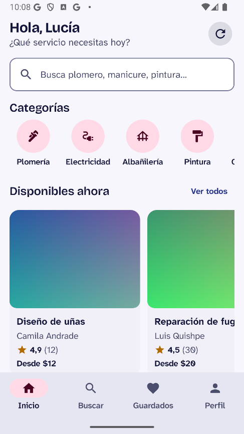
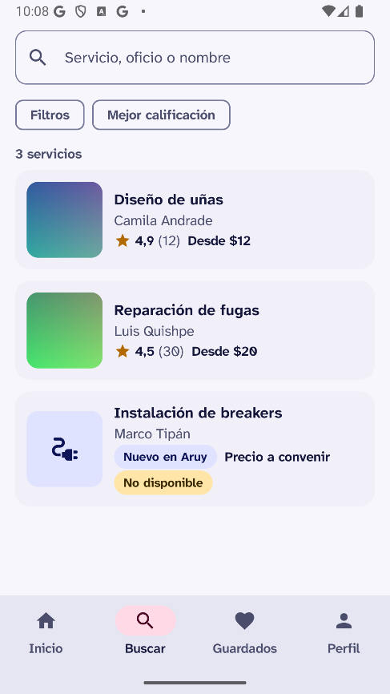
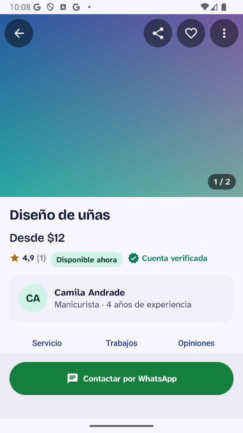
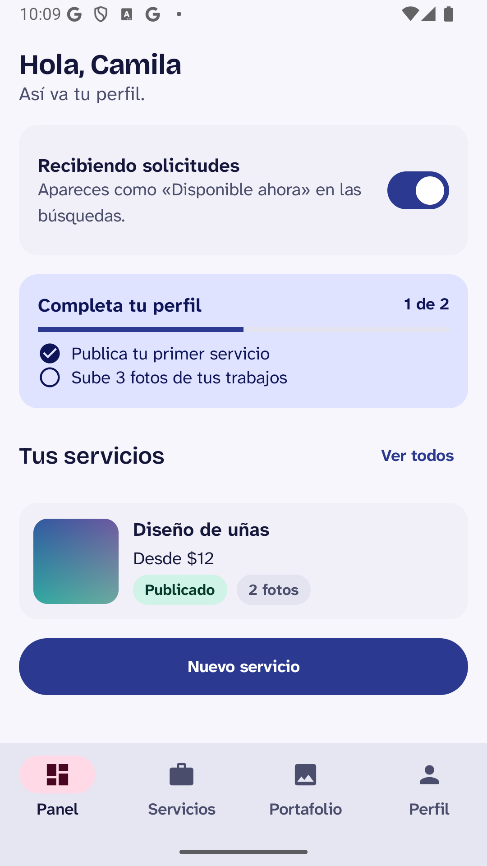

Encuentra a quien necesitas, cerca de ti.
Aruy conecta a trabajadores independientes de oficios en Quito con personas que buscan servicios confiables, rápidos y sin intermediarios.
Únete a la prueba con tu cuenta de Google y descarga Aruy desde Google Play. ¿Tu correo no está en la lista? Descarga el APK (ver cómo instalarla) o escanea el código QR.
- Publicarse es gratis
- Contacto directo por WhatsApp
- Sin comisiones

Sin el boca a boca, no hay clientes.
Plomeros, soldadores, albañiles, estilistas y otros trabajadores independientes de Quito dependen de las recomendaciones de sus conocidos. Cuando esa red no alcanza, pasan semanas sin trabajo.
Las plataformas que existen les resultan complicadas, están en otro idioma o les piden pagar para publicar.
«Necesitaba más clientes para hacerme conocer y no solo depender de los mismos de siempre.»
personas encuestadas en Quito dicen que las plataformas actuales son complicadas o poco efectivas.
es lo que dos trabajadores entrevistados dicen haber perdido por no tener trabajos nuevos.
publicarían su perfil si la prueba inicial es gratuita.
personas que contratan estos servicios contaron pérdidas de tiempo y dinero por no poder verificar al trabajador. Una habló de USD 150 y un mes de retraso.
Fuente: 12 entrevistas y 40 encuestas del equipo FrameFlow en Quito, septiembre de 2026 (RDA 1). Muestra por conveniencia: mide lo que la gente dice que haría, no su uso real.
Tres pasos y ya estás conectado.
Así se ve en la app. Una sola cuenta te sirve para buscar servicios y, si quieres, también para ofrecer los tuyos.
-
1
Busca por oficio o zona
Escribe lo que necesitas o toca una categoría. Filtra por sector de Quito: Norte, Centro, Sur o Valles. No necesitas crear una cuenta para explorar.
-

2Revisa trabajos y opiniones
Mira las fotos de trabajos reales, el precio referencial y las calificaciones de otros clientes antes de decidir.
-

3Contacta por WhatsApp
Un toque abre la conversación con el mensaje ya escrito. Sin intermediarios ni comisiones.

Publica tus trabajos y deja que te encuentren.
Crea tu cuenta como prestador, sube fotos de tus trabajos y activa «Recibiendo solicitudes». Publicarse es gratis.
Mira Aruy en acción y pruébala.
Un recorrido corto por la app. Si te gusta, instálala en tu celular en 4 pasos, aunque no estés en la lista de testers.
- Descarga el APK con el botón de abajo. Se guarda en Descargas.
- Ábrelo. Si Android lo pide, activa «Permitir desde esta fuente» (o «Instalar apps desconocidas») y vuelve atrás.
- Si Play Protect avisa, toca «Instalar de todos modos». Es una versión de prueba que no pasa por la tienda.
- Abre Aruy. La primera vez puede tardar hasta 1 minuto, porque el servidor gratuito se despierta.
Requiere Android 8 o superior · unos 48 MB · APK firmado por el equipo · código abierto en GitHub.
¿Tienes iPhone? Prueba Aruy en la web.
Funciona en Safari y en cualquier navegador, sin descargar nada. Usa las mismas cuentas que la app de Android.
Instálala en tu iPhone como una app
- Abre el enlace en Safari. Tiene que ser Safari.
- Toca el botón Compartir, el cuadrado con una flecha hacia arriba.
- Elige «Añadir a pantalla de inicio» y toca Añadir.
- Abre Aruy desde el ícono de tu pantalla de inicio.
En Android también puede instalarse desde Chrome (menú ⋮ → «Instalar app»), pero recomendamos la app de Android.
Lo que quizá te estés preguntando.
¿Es segura?
El APK está firmado por el equipo y el código es abierto: puedes revisarlo en GitHub (github.com/FrameFlow-app/Aruy-app).
¿Funciona en iPhone?
Sí, en la web: abre Aruy web en Safari y añádela a tu pantalla de inicio. Usa la misma cuenta que en Android.
¿Cuesta algo?
No. Es gratis.
¿Por qué un APK y no la tienda?
La prueba en Google Play es cerrada y solo entra el grupo de testers. Con el APK más gente puede probarla.
¿Cómo actualizo?
Vuelve a descargar el mismo enlace e instálalo encima. Si la app avisa que hay una versión nueva, es solo un aviso: puedes seguir usándola.
Android dice que hay un conflicto al instalar
Pasa cuando intentas pasar de la versión de Google Play al APK, o al revés: las dos llevan firmas distintas y Android no las deja convivir. Desinstala Aruy una sola vez (tu cuenta y tus datos están en el servidor) e instala la que vayas a usar. Para evitarlo, usa siempre el mismo canal: Google Play o el APK.
La app no toma los colores de mi fondo de pantalla
Los colores se adaptan al fondo en Android 12 o superior y desde la versión 0.7.0. Revisa la versión instalada en Ajustes del teléfono > Aplicaciones > Aruy; si es anterior, descarga el APK de nuevo.
¿Cómo borro mi cuenta?
En la app: Perfil > Eliminar mi cuenta. También puedes ver la política de privacidad.
La confianza que ofrecemos con los datos y la seguridad.
Fotos revisadas con IA
ML Kit comprueba en tu teléfono que cada foto corresponda al servicio. La imagen no se envía a ningún servicio de IA.
Datos protegidos
HTTPS, contraseñas cifradas y sesión guardada con Android Keystore. A las fotos se les quita la ubicación.
Opiniones de 1 a 5
Quien contrata califica el trabajo. Nadie puede calificar su propio perfil.
Tú decides
Elimina tu cuenta desde la app cuando quieras: se borran tus datos y tus fotos, de verdad.
Lo que hemos probado.
Validamos el problema con trabajadores reales y probamos la app con personas del segmento en sus propios celulares.
Completaron su tarea sin ayuda
7 personas del segmento, con su propio celular: 4 trabajadores de oficios y 3 clientes.
Testers activos cada semana
Hicieron al menos 2 búsquedas e interacciones por semana en Google Play. La meta era 8 de 12.
Pruebas automáticas
Unas 110 pruebas unitarias en la app (20 de la validación de fotos) y 20 del servidor.
Observamos a cada persona sin ayudarla
| Usuario | Perfil | Tarea | ¿Completó? | Tiempo | Qué vimos |
|---|---|---|---|---|---|
| U1 | Plomero, 42 años | Crear su cuenta de trabajador y publicar un trabajo con foto | Sí | 4:45 | Se confundió con la regla de contraseña de 8 o más caracteres. |
| U2 | Tecnólogo en electromecánica, 25 años | Crear su perfil y publicar un trabajo de mantenimiento industrial | No | 5:10 | No encontró su categoría y eligió «Otros». No pudo pasar a la parte de contratar con la misma cuenta. |
| U3 | Cliente, 38 años, norte | Buscar un electricista del Norte y contactarlo por WhatsApp | Sí | 3:20 | Encontró rápido el botón de WhatsApp. Sugirió filtrar por calificación. |
| U4 | Albañil, 50 años | Registrarse, subir fotos de obras y poner precio referencial | Sí | 6:15 | Le costó enfocar la cámara, pero lo logró al reintentar. |
| U5 | Cliente, 29 años, Valles | Buscar un servicio de plomería y guardarlo en Favoritos | Sí | 2:40 | Sin problemas. Dijo que la interfaz es limpia y directa. |
| U6 | Cerrajero, 45 años | Publicar un servicio y verificar que aparezca en el catálogo | No | 5:55 | Escribió una descripción muy larga y la app no le avisó del límite de caracteres. |
| U7 | Estudiante, 22 años, centro | Explorar como invitado y revisar el perfil de un prestador | Sí | 2:10 | Ningún error. La navegación como invitado le pareció fluida. |
Lo que funcionó
- El contacto por WhatsApp se encuentra rápido.
- Explorar sin cuenta es fluido.
- La interfaz se percibe limpia y directa.
Lo que hay que mejorar
- Explicar mejor la regla de la contraseña.
- Más categorías de oficios, para no depender de «Otros».
- Avisar del límite de caracteres en la descripción.
- Filtrar por calificación.
12 entrevistas y 40 encuestas en Quito
Validamos el problema antes de programar: dos hipótesis, la de los trabajadores y la de los clientes, quedaron validadas.
12 testers · 14 días
Prueba cerrada desde el 31 de octubre de 2026.
Las personas detrás de Aruy.
Estudiantes de la PUCE, Quito, en los cursos de Programación Móvil y Emprendimiento Tecnológico.
Tu próximo cliente ya está buscando.
Aruy está en prueba cerrada en Google Play. Únete con tu cuenta de Google y, en esa misma página, toca «Descargar en Google Play». Es gratis.
¿Dudas? Escríbenos a aruy.ec@gmail.com.